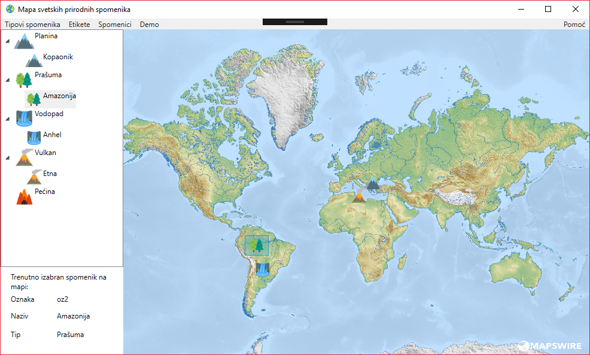
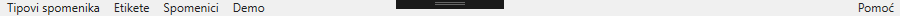

Dobro došli u sistem za pomoć aplikacije "Mapa svetskih prirodnih spomenika". Molimo vas izaberite neki od sledećih linnkova da biste naznačili vezano za šta vam je potrebna pomoć ili skrolujte dole za osnovne informacije o aplikaciji
Tipovi spomenika
Etikete
Spomenici
Mapa
Aplikacija Mapa svetkih prirodnih spomenika je stvorena sa ciljem da olakša evidenciju o svetskim prirodnim spomenicima i predelima izuzetne prirodne lepote i značaja zainteresovanim korisnicima. Ona omogućava dodavanje proizvoljnog broja prirodnih spomenika, tipova kojima će oni biti dodeljeni i etiketa kojima će biti tagovani. Svim navedeni entitetima je moguća manipulacija od strane korisnika što uključuje njihovo dodavanje izmenu, brisanje i slično. Evidencija o geografskoj rasprotranjenosti spomenika je omogućena njihovim pozicioniranjem na interaktivnu mapu sveta.
Prilikom rada sa aplikacijom moguće je u svakom trenutku izaći iz nje a sav dotadašnji rad će biti sačuvan. Dostupan je i demo mod pritiskom na istoimenu opciju u meniju koji preuzima kontrolu nad mišem i prikazuje proces dodavanja novog tipa spomenika, a može se u svakom trenutku prekinuti pritiskom dugmeta Space na tastaturi.
Meni 
Osim putem menija neke akcije se mogu raditi i preko toolbar-a koji se nalazi na dnu stranice. Ove akcije se mogu vršiti i putem prečica na tastaturi takozvanih akceleratora, a prečica za svaku akciju piše u tootipu kada se pređe mišem preko nje.